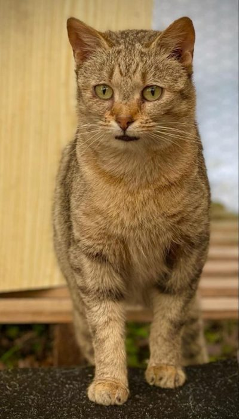
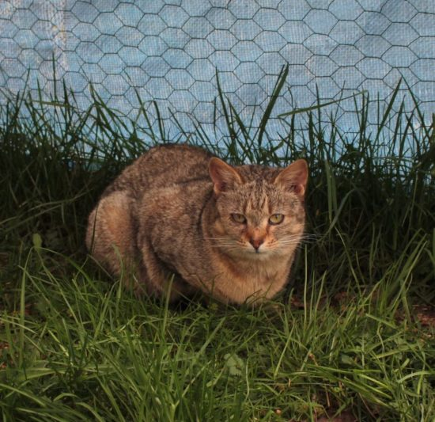
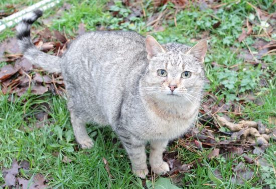

Simca
Simca fait partie des chats libres que nous souhaitons faire adopter.
Découverte avec 18 autres congénères sur une immense propriété laissée plus ou moins à l’abandon, nous avons choisi, avec nos faibles moyens, de tous les mettre en règle. Une fois stérilisés et identifiés, nous avons installé un point de nourrissage sur leur lieu de vie, afin de les aider à se remplumer.
Certains de ces minous se sont étonnamment vite acclimatés à notre présence régulière. Simca fait partie des tout premiers à nous avoir accordé sa confiance et en l’occurrence, c’est la première femelle que nous avons pu approcher!
Très douce, elle a eu besoin de se rassurer auprès de ses congénères et de nous observer longtemps avant de se laisser approcher. Ainsi, elle a établi un petit rituel d’approche : une fois que l’un des mâles ultra sociables venaient nous demander des câlins, elle s’approchait, venait se coller contre celui-ci pour lui réclamer des câlins et seulement à ce moment-là, nous pouvions la caresser à notre tour. Une fois que nos mains sont posées sur elle, nous avons tout le loisir de la caresser encore et encore, quand bien même elle nous voit approcher.
En Résumé
- Femelle
- estimée au 1er août 2022
- maison avec extérieur
- Enfant en bas âge à éviter
- 160 euros
Son caractère
- Douce
- Observatrice
- Câline
Actuellement
- Stérilisée
- Vermifugée et déparasitée
- Vaccinée
- Visible à St Hilaire la Treille

